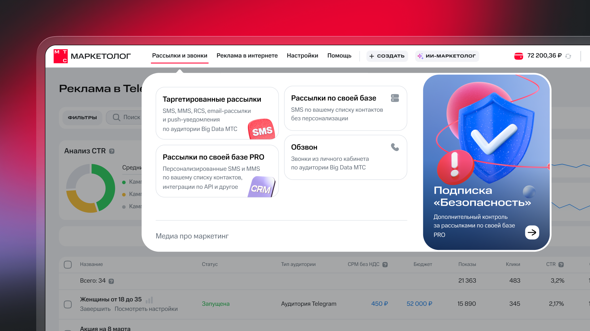
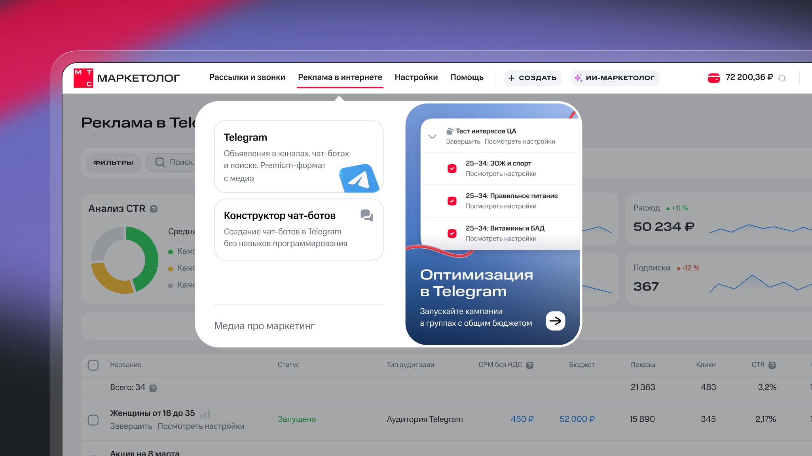
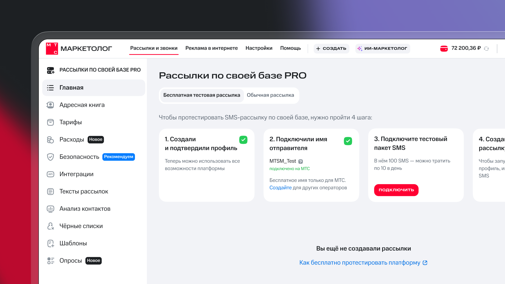

МТС Маркетолог
Новая навигация
2025 – 2026
За 8 лет работы продукта появилось больше возможностей и каналов, каждый со своими списками кампаний — а вот система навигации осталась прежней. Из-за этого новые пользователи терялись в личном кабинете и не знали, с чего начать.
В январе 2026 вышло большое обновления интерфейса МТС Маркетолога — я отвечала за проектирование новой навигации. Мы с командой рассказали как это было в статье на dsgners.ru
Результат: конверсия из черновика в запуск +3,4%, конверсия в подтверждение +5%, 97% остались в новом интерфейсе.


